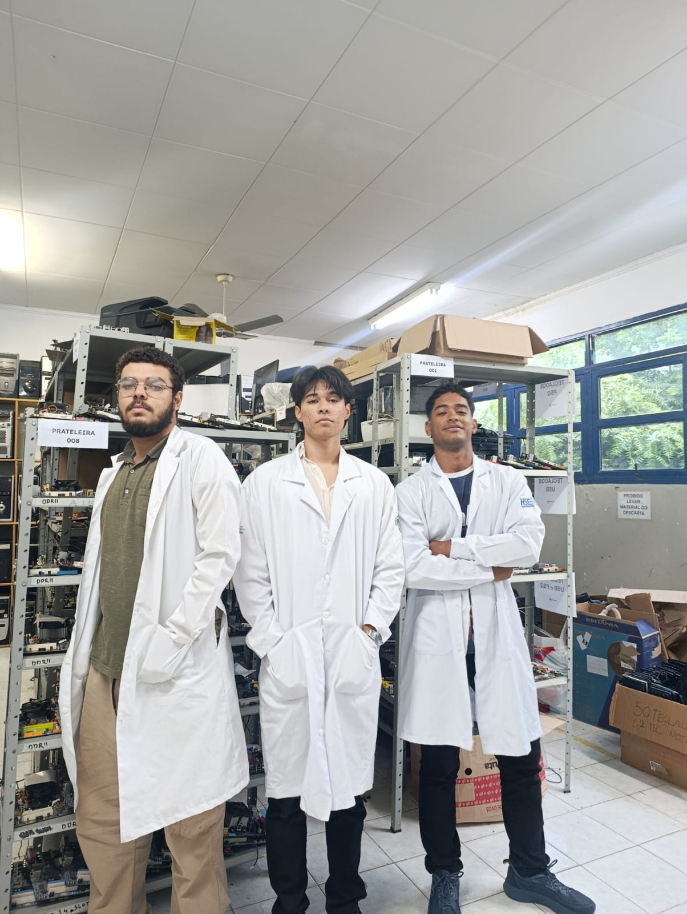
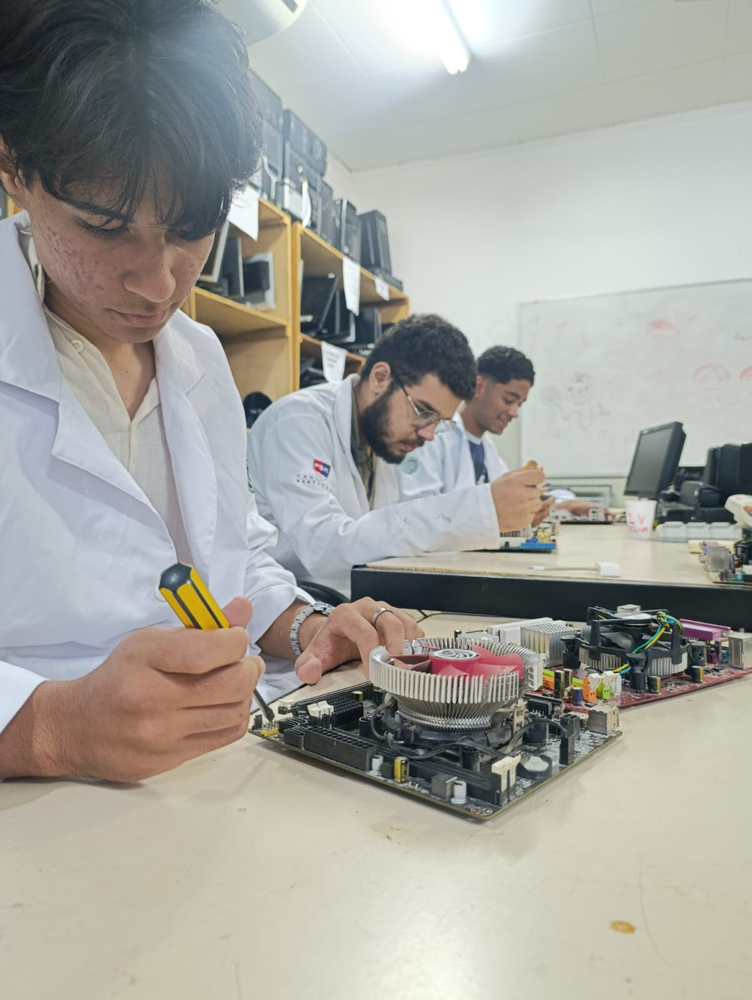
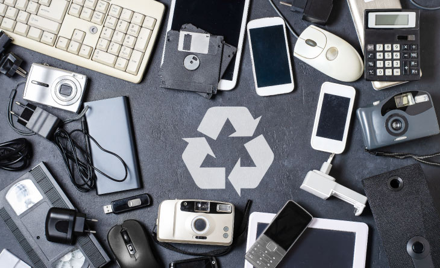
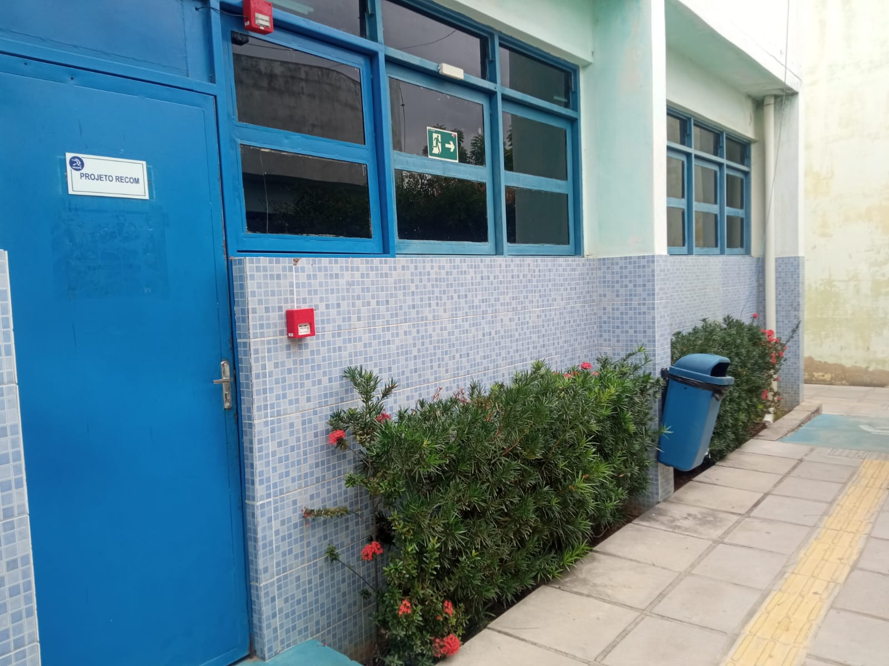
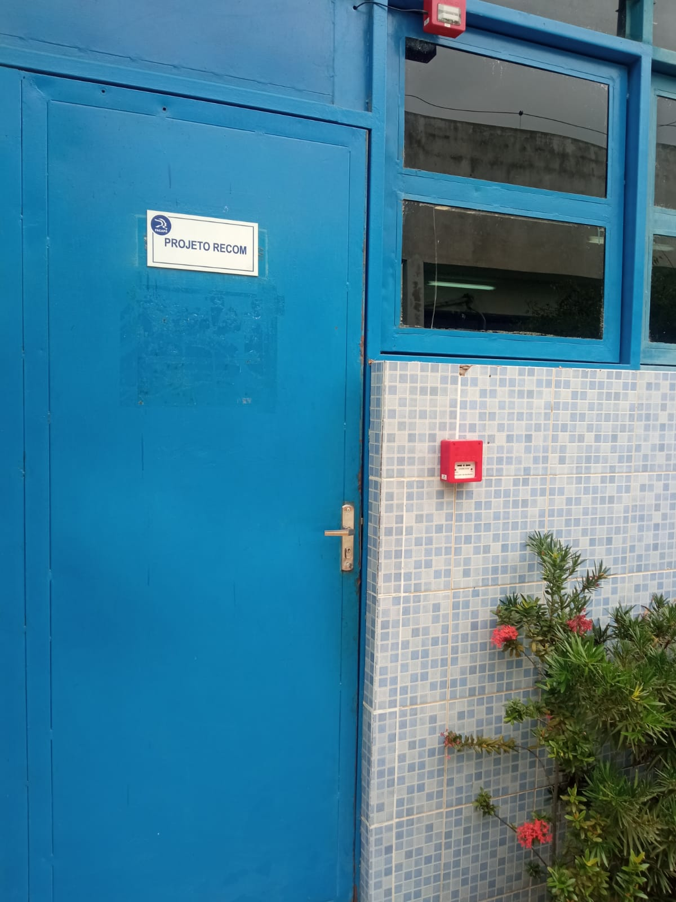

Coleta de E-Lixo: Doe para o RECOM!
Recondicionamento, reciclagem e inclusão digital na Faculdade de Petrolina.
Recondicionamento, reciclagem e inclusão digital na Faculdade de Petrolina.

“Um único celular descartado no lixo comum pode contaminar até 600 mil litros de água.”
Baterias e placas eletrônicas contêm metais pesados como chumbo, cádmio e mercúrio. Quando jogados em lixões ou terrenos, esses componentes infiltram no solo e atingem o lençol freático. A doação para o RECOM garante o descarte correto, protege nosso ecossistema no Vale do São Francisco e ainda possibilita a montagem de computadores para inclusão digital!
Confira os itens aceitos antes de trazer à FACAPE


O Projeto RECOM (Recondicionamento de Computadores) é uma iniciativa acadêmica da FACAPE que une formação técnica, responsabilidade ambiental e impacto social.
Aqui, os estudantes de Ciência da Computação colocam as mãos na massa: recebem os equipamentos descartados pela comunidade, desmontam cada carcaça, testam capacitores, memórias e circuitos, e reconstroem computadores 100% funcionais.
Máquinas restauradas voltam à vida útil para escolas e projetos comunitários.
Componentes sem conserto são encaminhados a recicladoras certificadas.
O ciclo completo de recondicionamento e reciclagem
O equipamento chega até a nossa sala na FACAPE através da sua doação consciente.
Separação minuciosa: parafusos, placas de circuito, cabos, fontes e carcaças plásticas.
Testes elétricos e diagnósticos na bancada para identificar o que ainda tem vida útil.
Peças em perfeito estado são remontadas em novos computadores para doação social.
O material inviável é destinado para empresas especializadas em reciclagem de eletrônicos.
Traga seus equipamentos diretamente ao Campus da FACAPE
📍 Campus Universitário, s/n — Vila Eduardo / Cidade Universitária, Petrolina – PE, CEP 56328-755.


Não deixe metais tóxicos poluírem o meio ambiente. Faça parte dessa rede de sustentabilidade e aprendizado universitário em Petrolina.
Separar meus equipamentos para doação